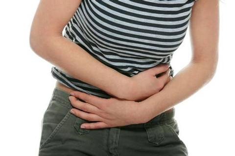

高谈阔论之时，一阵屁意袭来，放还是不放?长
途大巴缓慢行驶，尿意却急不可耐，怎么整？
这些不得不憋的屁屎尿，其实……
1、屁，堆积在大肠里→器官中毒
那些被憋回去的屁去哪儿了呢？
憋屁有暂时性憋屁和长期憋屁两种：
暂时性憋屁基本都是原路返回，回到大肠内，等待下一次的“释放”。
长期憋屁会被身体吸收，大量气体堆积在大肠内，往下通不了，身体就会找另外一条路，屁中的部分成分会透过肠道黏膜重新被血液吸收。
屁其实是人体内产生的一种废气，含有氮、氢、甲烷等有害成分。
如果长期憋屁，这些有害物质排不出，会被肠道黏膜重复吸收，出现胸闷、腹胀等症状；
↓
而且臭气积在体内会导致腹痛，使消化吸收的功能降低，甚至影响大便的排泄，出现便秘。
↓
而人在便秘时，大肠内会堆积更多的有害物质，产生更多的废气，从而形成恶性循环；
↓
如果长期不能排出体内的这些废气，会使体内的器官受到严重影响，特别是肝脏这类解毒器官的负担加重，长此以往，会减弱肝脏的解毒功能。
2、尿，存在膀胱里→膀胱膨胀、盆腔功能紊乱→尿毒症、肾脏疾病
尿液在体内不断增加，在膀胱内储存，会使膀胱不断膨胀。
尿液是人体产生的废物之一，它含有多种毒素，这些毒素如长时间存留体内，会对人体造成许多危害。
如果尿液滞留过多，超过膀胱的储量，便会向输尿管回流，时间长了可能会导致尿毒症，膀胱的括约肌也会因此变得松弛。
尿液长时间不能排泄，长期反复，会使盆腔器官功能紊乱，造成抵抗力下降。对于一些老年人来说，经常憋尿会导致前列腺肥大，更容易引发排尿困难。
3、大便，被肠道反复吸收→便秘、甚至肠道癌症
大便含有大量细菌和毒素，不及时排出，长期留存体内，水分就会被肠道反复吸收，导致大便干结难排。
经常把大便憋住，会因大便干结而出现肛裂，又因肛裂解便时疼痛不敢大便，久而久之会发展为便秘。
而且大便中的毒素在体内积累时间过长，有害物质被肠道吸收，就会出现精神委靡不振、头晕乏力、食欲减退等症状。
此外，长期如此，肠道中的菌群环境可能会被破坏，从而导致便秘、肛裂、痔疮等一系列肛肠疾病，严重者甚至会引发肠道癌症。